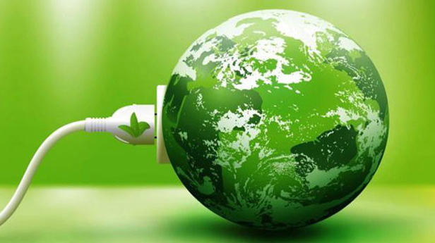
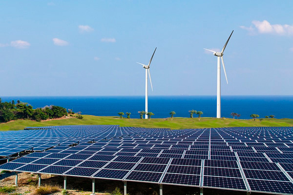
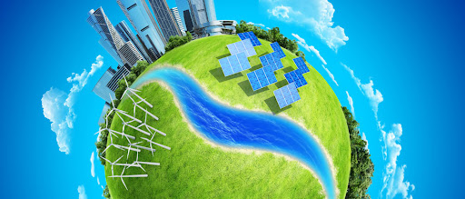

¿Por qué?
Nuestra vida cotidiana depende de servicios energéticos fiables y asequibles para funcionar sin trabas y de forma equitativa. Un sistema energético bien establecido apoya todos los sectores: desde las empresas, la medicina y la educación a la agricultura, las infraestructuras, las comunicaciones y la alta tecnología. Y a la inversa, la falta de acceso al suministro de energía y a sistemas de transformación es un obstáculo para el desarrollo humano y económico.
Yo tengo acceso electricidad. ¿Por qué debería importarme este objetivo?
Durante muchos decenios, los combustibles fósiles como el carbón, el petróleo o el gas han sido las principales fuentes de producción de electricidad, pero la quema de combustibles con alto contenido en carbono produce grandes cantidades de gases de efecto invernadero,que contribuyen al cambio climático y tienen efectos perjudiciales para el bienestar de la población y el medio ambiente. Esto afecta a todos, y no solo a unos pocos. Además, el consumo de electricidad a nivel mundial está aumentando rápidamente. En pocas palabras, sin un suministro estable de electricidad, los países no podrán impulsar sus economías.
¿Cuántas personas viven sin electricidad?

Más de 1.200 millones de personas —una de cada cinco personas de la población mundial— viven sin electricidad. La mayoría se concentra en una docena de países de África y Asia. Sin electricidad, las mujeres y las niñas tienen que dedicar horas a ir en busca de agua, las clínicas no pueden almacenar vacunas para los niños, muchos escolares no pueden hacer los deberes durante la noche y los empresarios no pueden dirigir empresas competitivas. Otros 2.800 millones de personas dependen de la leña, el carbón vegetal, el estiércol y la hulla para cocinar y calentarse, lo que provoca más de 4millones de muertes prematuras al año por contaminación del aire en locales cerrados.
¿Cuánto costaría pasar a una energía más sostenible?
El mundo debe triplicar su inversión anual en infraestructuras de energía sostenible y pasar de los 400.000 millones de dólares actuales a 1,25 billones de dólares en 2030. Las regiones con mayor déficit energético, a saber, África Subsahariana y Asia Meridional, necesitan nuestra ayuda para mejorar el acceso a la energía. Ello incluye hacer mayores esfuerzos para encontrar alternativas limpias, eficientes y asequibles a las cocinas que son perjudiciales para la salud.
¿Qué podemos hacer para solucionar estos problemas?
Los países pueden acelerar la transición a un sistema energético asequible, fiable y sostenible invirtiendo en recursos energéticos renovables, dando prioridad a las prácticas de alto rendimiento energético y adoptando tecnologías e infraestructuras de energía no contaminante. Las empresas pueden mantener y proteger los ecosistemas para poder utilizar y desarrollar fuentes hidroeléctricas de electricidad y bioenergía, y comprometerse a satisfacer el 100% de sus necesidades operacionales de electricidad a partir de fuentes de energía renovable. Los empleadores pueden reducir la demanda interna de transporte dando prioridad a las telecomunicaciones, e incentivar los modos de transporte de menor consumo energético, como el transporte ferroviario, por encima del transporte aéreo o por carretera.